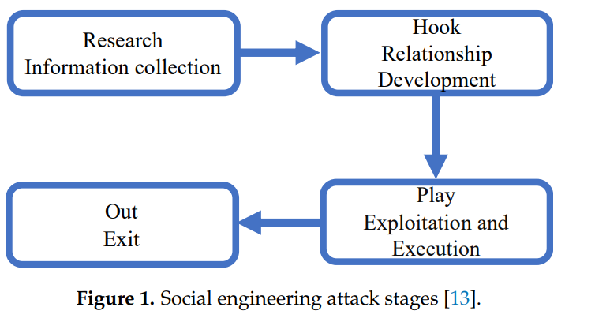
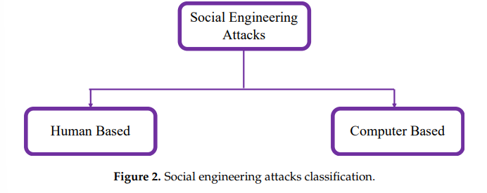
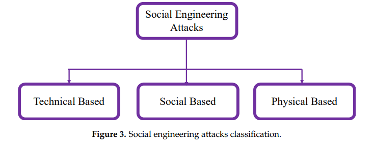
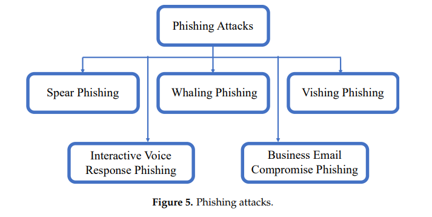

<!DOCTYPE html>
<head>
    <title>My Paper</title>
    <link rel="stylesheet" href="./style.css">
</head>
<body>
    <h1 class="heading">Social Engineering Attacks: A Survey</h1>
    <h1 class="heading">Fatima Salahdine * and Naima Kaabouch</h1>
    <p class="text">School of Electrical Engineering and Computer Science, University of North Dakota,</p>
    <p class="text">Grand Forks, ND 58202, USA; naima.kaabouch@und.edu</p>
    <p class="text">* Correspondence: fatima.salahdine@und.edu; Tel.: +1-701-777-4460</p>
    <p class="text">Received: 15 February 2019; Accepted: 27 March 2019; Published: 2 April 2019</p>
    <article>
    <p><h1><b>Abstract:</b></h1> The advancements in digital communication technology have made communication
        between humans more accessible and instant. However, personal and sensitive information may be
        available online through social networks and online services that lack the security measures to protect
        this information. Communication systems are vulnerable and can easily be penetrated by malicious
        users through social engineering attacks. These attacks aim at tricking individuals or enterprises
        into accomplishing actions that benefit attackers or providing them with sensitive data such as social
        security number, health records, and passwords. Social engineering is one of the biggest challenges
        facing network security because it exploits the natural human tendency to trust. This paper provides
        an in-depth survey about the social engineering attacks, their classifications, detection strategies,
        and prevention procedures.</p>
    <p><b>Keywords:</b>&nbsp;Social engineering attacks; cyber security; phishing; vishing; spear phishing; scams;
        baiting; robocalls</p>
    <hr>
    <h1><b>1. Introduction</b></h1>
    <p> &nbsp;&nbsp;&nbsp;&nbsp;Social engineering attacks are rapidly increasing in today’s networks and are weakening the
        cybersecurity chain. They aim at manipulating individuals and enterprises to divulge valuable and
        sensitive data in the interest of cyber criminals [1]. Social engineering is challenging the security of all
        networks regardless of the robustness of their firewalls, cryptography methods, intrusion detection
        systems, and anti-virus software systems. Humans are more likely to trust other humans compared
        to computers or technologies. Therefore, they are the weakest link in the security chain. Malicious
        activities accomplished through human interactions influence a person psychologically to divulge
        confidential information or to break the security procedures [2]. Due to these human interactions, social
        engineering attacks are the most powerful attacks because they threaten all systems and networks.
        They cannot be prevented using software or hardware solutions as long as people are not trained to
        prevent these attacks. Cyber criminals choose these attacks when there is no way to hack a system
        with no technical vulnerabilities [3].</p>
    <p>According to the U.S. Department of Justice, social engineering attacks are one of the most
        dangerous threats over the world. In 2016, the cyber security analyst company Cyence stated that the
        United States was the country targeted by the most social engineering attacks and had the highest
        attacking cost followed by Germany and Japan. The estimated cost of these attacks in the US was
        $121.22 billion. In particular, U.S. companies are highly targeted and impacted by cyber criminals and
        hackers from everywhere in the world. These companies handle international significant valuable
        data and when these companies are hacked, it highly impacts the worldwide economy and privacy [4].
        For instance, Equifax company was hacked for several months and sensitive costumers ‘data were
        stolen in 2018. This company is a consumer credit reporting and monitoring agency that aggregates
        data of individuals and business consumers to monitor their credit history and prevent frauds. As a result of this data theft, attackers accessed personal information of 145.5 million American consumers.
        This data included consumers’ full names, birth dates, social security numbers (SSN), driver license
        numbers, addresses, telephone numbers, credit cards information, and credit scores. This breach
        was the result of phishing attacks conducted by sending thousands of emails pretending to be from
        financial institutions or big banks such as Bank of America [5]. Equifax users are still worrying about
        this breach lunched by cyber attackers [5]. A more recent cyber security attack was reported by Central
        Bank where an attacker stole over $80 million using a remote access trojans (RAT) installed on the
        bank’s computers [6]</p>
    <p>In addition, U.S. Federal Bureau of Investigation (FBI) reported an increase of CEO fraud and 
        email scams where attackers send emails to some employees pretending to be their boss and asking 
        them to transfer funds. These companies lost more than $2.3 billion. Moreover, recent studies and 
        surveys reported that 84% of cyber-attacks are conducted by social engineers with high success rate 
        [7]. Thus, these statistics and others show that social engineering attacks can cost more than a natural 
        disaster, which confirms how important it is to detect and mitigate these cyberattacks.
        In this paper, we present an in-depth survey about social engineering attacks, existing detection
        methods, and countermeasure techniques. The rest of this paper is organized as follows. Section II 
        classifies and describes social engineering attacks. Section III and IV provide an overview of existing
        detection, prevention, and mitigation techniques. These techniques are then discussed and compared 
        in Section, V. Section VI represents challenges and future directions. Finally, a conclusion is given at 
        the end.</p>
    <h1><b>2. Social Engineering Attacks</b></h1>
    <p>&nbsp;&nbsp;&nbsp;&nbsp;Currently, social engineering attacks are the biggest threats facing cybersecurity [4–9]. 
        According to the authors of [6], they can be detected but not stopped. Social engineers take advantage 
        of victims to get sensitive information, which can be used for specific purposes or sold on the black 
        market and dark web. With the Big Data advent, attackers use big data for capitalizing on valuable 
        data for businesses purposes [10]. They package up huge amounts of data to sell in bulk as goods of 
        today’s markets</p>
     <p>&nbsp;&nbsp;&nbsp;&nbsp;Although social engineering attacks differ from each other, they have a common pattern with
        similar phases. The common pattern involves four phases: (1) collect information about the target;
        (2) develop relationship with the target; (3) exploit the available information and execute the attack;
        and (4) exit with no traces [12]. Figure 1 illustrates the different stages of a social engineering attack.</p>  
    
    <p>In the research phase, also called information gathering, the attacker selects a victim based on 
        some requirements. In the hook phase, the attacker starts to gain the trust of the victim through direct 
        contact or email communication. In the paly phase, the attacker influences the victim emotionally to 
        provide sensitive information or perform security mistakes. In the out phase, the attacker quits 
        without leaving any proof [13]</p>
    <h1>2.1. Attacks Classification</h1>
    <p>&nbsp;&nbsp;&nbsp;&nbsp;Social engineering attacks can be classified into two categories: human-based or computer-based
        as illustrated in Figure 2 [14].</p>
    
    <p>&nbsp;&nbsp;&nbsp;&nbsp;In human-based attacks, the attacker executes the attack in person by interacting with the target 
        to gather desired information. Thus, they can influence a limited number of victims. The softwarebased attacks are performed using devices such as computers or mobile phones to get information 
        from the targets. They can attack many victims in few seconds. Social engineering toolkit (SET) is one 
        of the computer-based attacks used for spear phishing emails [15]. Social engineering attacks can also 
        be classified into three categories, according to how the attack is conducted: social, technical, and 
        physical-based attacks, as illustrated in Figure 3 [1,2].</p>
    
    <p>&nbsp;&nbsp;&nbsp;&nbsp;In human-based attacks, the attacker executes the attack in person by interacting with the target 
        to gather desired information. Thus, they can influence a limited number of victims. The softwarebased attacks are performed using devices such as computers or mobile phones to get information 
        from the targets. They can attack many victims in few seconds. Social engineering toolkit (SET) is one 
        of the computer-based attacks used for spear phishing emails [15]. Social engineering attacks can also 
        be classified into three categories, according to how the attack is conducted: social, technical, and 
        physical-based attacks, as illustrated in Figure 3 [1,2].</p>
    
    <p>&nbsp;&nbsp;&nbsp;&nbsp;Social-based attacks are performed through relationships with the victims to play on their 
        psychology and emotion. These attacks are the most dangerous and successful attacks as they involve 
        human interactions [16]. Examples of these attacks are baiting and spear phishing. Technical-based
        attacks are conducted through internet via social networks and online services websites and they 
        gather desired information such as passwords, credit card details, and security questions [1]. 
        Physical-based attacks refer to physical actions performed by the attacker to collect information about 
        the target. An example of such attacks is searching in dumpsters for valuable documents[2]</p>
    <p>&nbsp;&nbsp;&nbsp;&nbsp;Social engineering attacks may combine the different aspects previously discussed, namely: 
        human, computer, technical, social, and physical-based. Examples of social engineering attacks 
        include phishing, impersonation on help desk calls, shoulder surfing, dumpster diving, stealing 
        important documents, diversion theft, fake software, baiting, quid pro quo, pretexting, tailgating, 
        Pop-Up windows, Robocalls, ransomware, online social engineering, reverse social engineering, and 
        phone social engineering [1–18]. Figure 4 illustrates the classification of these attacks.</p>
    
    <p>&nbsp;&nbsp;&nbsp;&nbsp;Social engineering attacks can be classified into several categories depending on several
        perspectives. They can be classified into two categories according to which entity is involved: human
        or software. They can also be classified into three categories according to how the attack is conducted:
        social, technical, and physical-based attacks. Through analyzing the different existing classifications of
        the social engineering attacks, we can also classify these attacks into two main categories: direct and
        indirect. Attacks classified under the first category use direct contacts between the attacker and the
        victim to perform the attack. They refer to attacks performed via physical contact or eye contact or voice
        interactions. They may also require the presence of the attacker in the victim’s working area to perform
        the attack. Examples of these attacks are: physical access, shoulder surfing, dumpster diving, phone
        social engineering, pretexting, impersonation on help desk calls, and stealing important documents.
        Attacks classified under the indirect category do not require the presence of the attacker to launch an
        attack. the attack can be launched remotely via malware software carried by email’s attachments or
        SMS messages. Examples of these attacks are: phishing, fake software, Pop-Up windows, ransomware,
        SMSishing, online social engineering, and reverse social engineering.</p>
    <h1><i>2.2. Attacks Description</i></h1>
    <h1>2.2.1. Phishing Attacks</h1>
    <p>&nbsp;&nbsp;&nbsp;&nbsp;Phishing attacks are the most common attacks conducted by social engineers [19,20]. They aim 
        at fraudulently acquiring private and confidential information from intended targets via phone calls
        or emails. Attackers mislead victims to obtain sensitive and confidential information. They involve 
        fake websites, emails, ads, anti-virus, scareware, PayPal websites, awards, and free offers. For 
        instance, the attack can be a call or an email from a fake department of lottery about winning a prize 
        of a sum of money and requesting private information or clicking on a link attached to the emails could be credit card details, insurance data, full name, physical address, pet’s name, first or dream job,
        mother’s name, place of birth, visited places, or any other information the person could use to log in to
        sensitive accounts such as online banking or services [21].</p>
    <p>Phishing attacks can be classified into five categories: spear phishing, whaling phishing, vishing
        phishing, interactive voice response phishing, and business email compromise phishing as illustrated
        in Figure 5 [15].</p>
    
    <p>&nbsp;&nbsp;&nbsp;&nbsp;Spear phishing attacks refer to specific phishing that target specific individuals or selected 
        groups using their names to make claims or communications. They require collecting information 
        about the victim using available data online. As they attack an entity from inside, it is difficult to 
        detect and distinguish them from legitimate users, which explains the high success rate of these 
        attacks compared to other social engineering attacks [22]. Whaling phishing is a spear phishing attack
        targeting high profiles in companies named big fishes. Vishing attacks refer to phone phishing to 
        manipulate persons to give their sensitive information for verification like calls from a bank [20]. The 
        name of this attack, ‘vishing’, is derived from voice and phishing to describe the attacks performed 
        via voice over the internet protocol (VoIP) [23]. Interactive voice response phishing is performed by 
        using an interactive voice response system to make the target enter the private information as if it is 
        from a legitimate business or bank.</p>
    <p>&nbsp;&nbsp;&nbsp;&nbsp;Business email compromise phishing mimics the whaling by targeting big “fishes” in corporate 
        businesses in order to get access to their business emails, calendar, payments, accounting, or other 
        private information [25]. The social engineer uses this data to send emails by mutating past emails, 
        change meeting schedules, read professional information about the enterprise, and contact clients or 
        service providers. The attacker starts by researching high profile employees through social media to 
        know and understand their professional information such as authorized range of money a target can 
        get from the bank [26]. After gaining desired information, the attacker sends a highly convincing 
        business email to get a normal employee to click on a link or download an email attachment to 
        compromise the company’s network. The attacker chooses a specific time according to the target’s 
        calendar and inserts an emergency sense into the email to get the employee act quickly.</p>
    <h1>2.2.2. Pretexting Attacks</h1>
    <p>&nbsp;&nbsp;&nbsp;&nbsp;Pretexting attacks consist of inventing fake and convincing scenarios in order to steal a victim’s
        personal information. They are based on pretexts that make the victim believe and trust the attacker [27].
        The attack is performed via phone calls, emails, or physical media. Attackers use publishing
        information on phone books, public web pages, or conferences where collaborators in the same
        field meet to carry out their attack. The pretext may be an offer to perform a service or to get a job,
        asking about personal information, helping a friend to get access to something, or winning a lottery.</p>
    <h1>2.2.3. Baiting Attacks</h1>
    <p>&nbsp;&nbsp;&nbsp;&nbsp;Baiting attacks, also called road apples, are phishing attacks that invite users to click on a link
        to get free stuff. They act like trojan horses where the attack is performed by exploiting unsecured
        computer materials such as storage media or USB drives containing malware in a coffee shop to be
        found by victims. When the victims plug the USB drive into their computers, the drive acts like a real
        world trojan horse and attacks the computer. This attack performs malicious actions in the background
        without being noticed by the victims.</p>
    <p>&nbsp;&nbsp;&nbsp;&nbsp;In [7], the authors described a baiting attack named controller area network (CANDY) to be
        launched as a trojan horse in the infotainment system of automotive systems. This attack impacts
        the security capabilities of the vehicle by manipulating the communication between the driver and
        the vehicle. It is performed by recording the driver’s voice which lets the attacker remotely access
        the victim’s vehicle via back door, collect information about the vehicle circulation, and control the
        operation of the vehicle.</p>
    <h1>2.2.11. Other Attacks</h1>
    <p>&nbsp;&nbsp;&nbsp;&nbsp;There are many other types of attacks that can be summarized as follows:</p>
    <ul>
    <li>Impersonation on Help Desk attacks: the attacker pretends to be someone with authority or a
        company’s employee and calling the help desk requesting information or services.</li>
    <li>Dumpster Diving attacks: consist of gathering sensitive documents from company’s trash or
        discarded equipment such as old computer materials, drives, CDs, and DVDs [37].</li>
    <li>Quid Pro Quo attacks: baiting attacks offering free services to seduce the victim. They require an
        exchange of information in return for a service or product [37].</li>
    <li>Diversion Theft attacks: consist of misdirecting a transport company to deliver a courier or
        package to the desired location</li>
    <li>Shoulder surfing attacks: consist of watching the victim while entering passwords or
        sensitive information</li>
    <li>Stealing important documents attacks: consist of stealing files from someone’s desk for
        personal interests.</li>
    <li>Online social engineering attacks: the attacker pretends to be the network administrator for a
        company and asks for usernames and passwords.</li> 
    </ul>
    <table>
        
        <tr>
            <th>Techniques</th>
            <th> Description</th>
            <th>Advantages</th>
            <th>Limitations</th>
        </tr>
        
        <tr>
            <td>Filtering tools</td>
            <td>Anti-phishing tools (McAfee
                filter, Microsoft filter, and
                Web sense)
            </td>
            <td>- Can block phishing emails
                and websites
            </td>
            <td>- Not efficient<br>
                - Attackers can send<br>
                internally emails<br>
                - Limited by human
                unawareness<br>
                - Expensive tools
            </td>
        </tr>
        
        <tr>
            <td>
                Alerting andscanning software
            </td>
            <td>Anti-virus, anti-spams,
                anti-scams
            </td>
            <td>- Efficient in alerting
                - Efficient in scanning
                - Strong products with security
                measures
            </td>
            <td>- Expensive products
                - Alerts ignored by
                Humans
            </td>
        </tr>
        
        <tr>
            <td>Biometric solutions</td>
            <td>Based on biological traits</td>
            <td>- Distinguish real profiles from
                fake profiles through their
                biological traits
                - Efficient
            </td>
            <td>- Can be mimicked</td>
        </tr>
        
    </table>
    <h1><b>References</b></h1>
    <ol>
        <li>Kalnin, s, R.; Purin, s, J.; Alksnis, G. Security evaluation of wireless network access points. Appl. Comput. Syst.
            2017, 21, 38–45. [CrossRef</li>
        <li>Pokrovskaia, N. Social engineering and digital technologies for the security of the social capital’ development.
            In Proceedings of the International Conference of Quality Management, Transport and Information Security,
            Petersburg, Russia, 24–30 September 2017; pp. 16–19. [CrossRef]</li>
        <li>Aroyo, A.M.; Rea, F.; Sandini, G.; Sciutti, A. Trust and social engineering in human robot interaction: Will
            a robot make you disclose sensitive information, conform to its recommendations or gamble? IEEE Robot.
            Autom. Lett. 2018, 3, 3701–3708. [CrossRef]</li>
        <li>Arana, M. How much does a cyberattack cost companies? Open Data Security 2017, 1–</li>
        <li>Chargo, M. You’ve been hacked: How to better incentivize corporations to protect consumers’ data.
            Trans. Tenn. J. Bus. Law 2018, 20, 115–143.</li>
        <li>Libicki, M. Could the issue of DPRK hacking benefit from benign neglect? Georg. J. Int. Aff. 2018, 19, 83–89.
            [CrossRef</li>
        <li>Costantino, G.; La Marra, A.; Martinelli, F.; Matteucci, I. CANDY: A social engineering attack to leak
            information from infotainment system. In Proceedings of the IEEE Vehicular Technology Conference, Porto,
            Portugal, 3–6 June 2018; pp. 1–5. [CrossRef]
        </li>
        <li>Pavkovi´c, N.; Perkov, L. Social Engineering Toolkit—A systematic approach to social engineering.
            In Proceedings of the 34th IEEE International Convention MIPRO, Opatija, Croatia, 23–27 May 2011;
            pp. 1485–1489</li>
    </ol>
    </article>
    <article>
        <h1>Addendum</h1>
        <p><b>DOCTYPE:  </b> It is a document type declaration. It tells the browser what version of HTML the page is written in. </p>
        <p><b>head: </b> The head tag contains machine-readable information (metadata) about the document, like its title, scripts, and style sheets.  </p>
        <p><b>title: </b>The title tag is an HTML element that specifies the title of a web page.</p>
        <p><b>link: </b>The link tag defines the relationship between the current document and an external resource. </p>
        <p><b>body: </b>The body tag in HTML contains all the main content of a webpage, such as headings, paragraphs, images, and tables.</p>
        <p><b>h1: </b>The H1 tag is an HTML heading that's most commonly used to mark up a web page title.</p>
        <p><b>h16: </b>The H16 element defines a level-four heading. This heading is more important than an H5 but less important than an H3.</p>
        <p><b>p: </b>The Paragraph element . The HTML element represents a paragraph.</p>
        <p><b>article: </b>The article HTML element represents a self-contained composition in a document, page, application, or site, which is intended to be independently distributable or reusable </p>
        <p><b>b: </b>The <!b> HTML element is used to draw the reader's attention to the element's contents, which are not otherwise granted special importance.</p>
        <p><b>hr: </b>The hr tag in HTML stands for horizontal rule and is used to insert a horizontal rule or a thematic break in an HTML page to divide or separate document sections. </p>
        <p><b>img: </b>The HTML img tag is used to embed images in a web page. </p>
        <p><b>i: </b>The <!i> tag in HTML is used to display the content in italic style.</p>
        <p><b>ul: </b>The ul tag in HTML stands for "unordered list". It creates a list of related items that are represented by bullet points. The order of the items in an unordered list is not relevant.</p>
        <p><b>li: </b>The <li> HTML element is used to represent an item in a list. </p>
        <p><b>table: </b>An HTML structure for creating rows and columns on a Web page. </p>
        <p><b>tr: </b> Table Row (TR) tag is used to build each row.</p>
        <p><b>td: </b>The Table Data (TD) tag defines the actual data. Prior to HTML5, tables were often used for virtually every element on the page.</p>
        <p><b>th: </b>The <th> tag defines a header cell in an HTML table. </p>
        <p><b>ol: </b>The <ol> tag defines an ordered list.</p>
    </article>
    <article>
        <h1>Addendum:CSS</h1>

        <p><b>margin-left & margin-right: </b> These two attributes set the margins for html box elements on left and right side relatively to the parent box. I used these to set the ehole page and image margins. </p>
        <p><b>height & width: </b> These two attributes set the horizontal and vertical dimentions of elements.I used them to set image size on page</p>
        <p><b>border & border-collapse: </b> These are used for setting border styling for the table I inserted in the page.</p>
        <p><b>font-size: </b> This attribute is used to set the font size inside an eliment. I used this to differentiate different elements.</p>
        <p><b>color: </b>This attribute is used to set the color for content inside a element.</p>
    </article>
</body>
